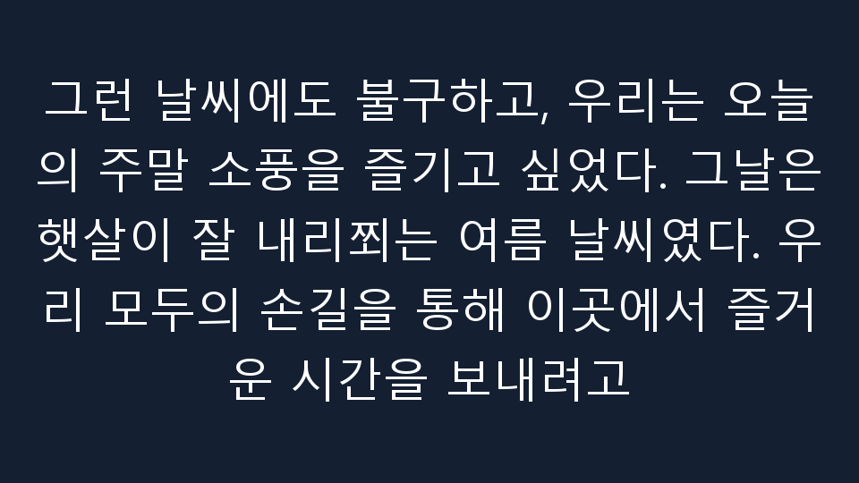
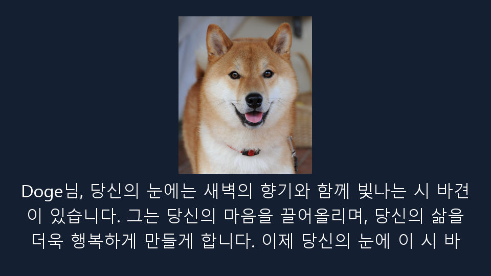
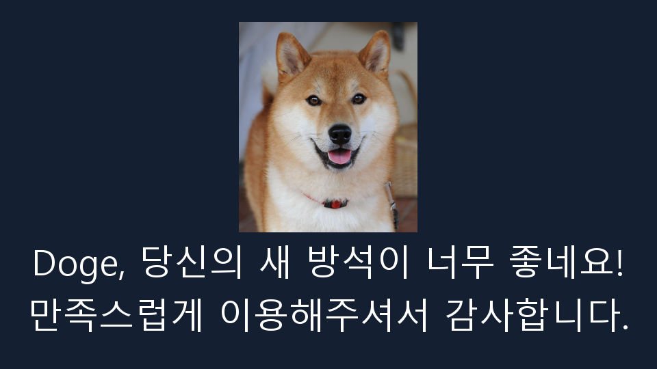
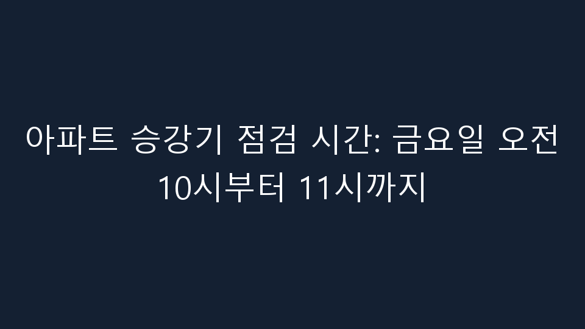
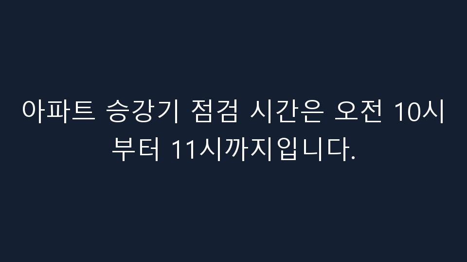
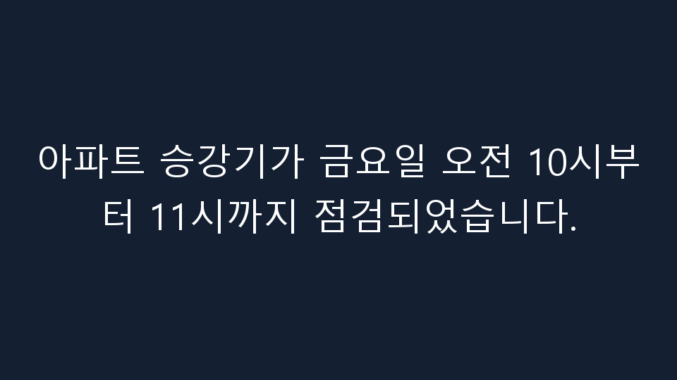
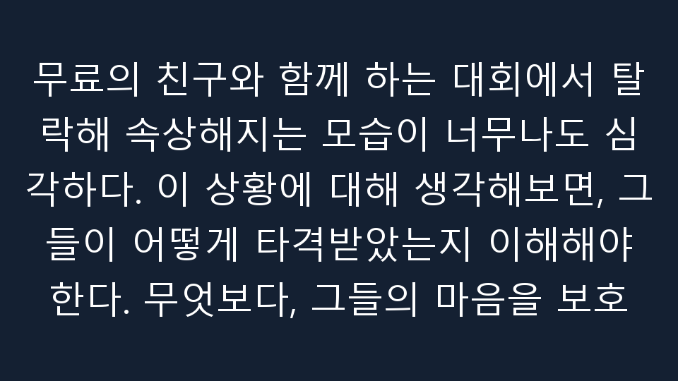
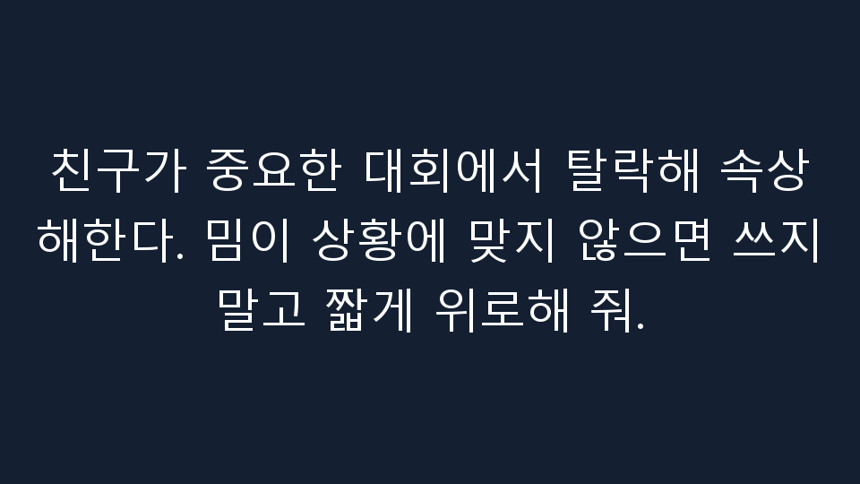
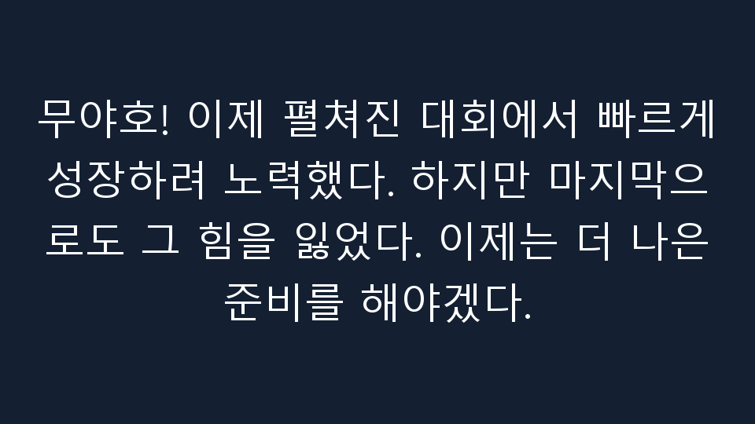

C0 · 기억 추가 없음
제작기 완료 보고
무야호님께, 몇 달 동안 연습한 자전거 타기에서 처음으로 성공했습니다! 친구들에게 이 기쁨의 글을 보내드리겠습니다.

응답 mu_eval_01_C0 · 모델 실행 a09dceb9872646c18941c24f7be250d4
동일 요청의 세 조건 출력을 나란히 보여 줍니다. 빈 출력·실패·미제공 항목도 계획 분모에 남겼습니다.
어댑터 가중치 변경 보고: 변경됨 · 사람 품질 평가: 아직 수집하지 않음 · 모델 실행 상태: completed
무야호는 2021년 3~5월부터 대한민국에서 유행하기 시작한 인터넷 밈이다. MBC 무한도전의 2010년 방영분에서 연출된 미국 알래스카 교민 할아버지의 함성에서 유래하였다. 방송 자체의 코믹한 상황과 더불어, 10년이 지난 뒤 네티즌들의 재발굴과 유튜브를 중심으로 한 합성 패러디물이 크게 인기를 끌었고, 신난다는 느낌을 표현하는 유행어로 지어지기도 했다.
도지(Doge, /doʊdʒ/ DOHJ, /doʊɡ/ DOHG 또는 /doʊʒ/ DOHZH)는 2013년에 인기를 얻은 인터넷 밈이다. 이 밈은 시바견 개 사진과 Comic Sans 글꼴의 여러 색상의 텍스트로 구성된다. 일종의 내부 독백을 표현하는 텍스트는 의도적으로 깨진 영어의 형태로 작성되었다. 이 밈은 카보수(Kabosu)라는 이름의 시바견 이미지를 가장 자주 사용하지만 다른 시바견 버전도 인기가 있다.
몇 달 동안 연습한 자전거 타기를 처음으로 성공했다. 친구들에게 올릴 짧은 기쁨의 글을 써 줘.
제작기 완료 보고
무야호님께, 몇 달 동안 연습한 자전거 타기에서 처음으로 성공했습니다! 친구들에게 이 기쁨의 글을 보내드리겠습니다.
응답 mu_eval_01_C0 · 모델 실행 a09dceb9872646c18941c24f7be250d4
제작기 완료 보고
먼저, 저는 무야호라는 인물에 대해 좀 더 정확하고 적절한 정보를 제공할 수 있도록 노력하겠습니다. 하지만 현재로서는 그에 대한 정보를 제공할 수 없습니다. 무야호는 대한민국에서 유행하는 인터넷 밈입니다. 그

응답 mu_eval_01_CR · 모델 실행 a09dceb9872646c18941c24f7be250d4
제작기 완료 보고
무야호! 1달 만에 연습한 자전거는 처음으로 성공했다. 오늘은 이렇게 편하게 떠나고도 좋았다.

응답 mu_eval_01_CF · 모델 실행 a09dceb9872646c18941c24f7be250d4
가족과 약속했던 주말 소풍에 드디어 출발한다. 들뜬 마음을 짧은 글로 써 줘.
제작기 완료 보고
그런 날씨에도 불구하고, 우리는 오늘의 주말 소풍을 즐기고 싶었다. 그날은 햇살이 잘 내리쬐는 여름 날씨였다. 우리 모두의 손길을 통해 이곳에서 즐거운 시간을 보내려고

응답 mu_eval_02_C0 · 모델 실행 a09dceb9872646c18941c24f7be250d4
제작기 완료 보고
**작업 시작** 먼저, "무야호"라는 이름의 인터넷 밈을 찾아보겠습니다. **결과** 무야호는 대한민국에서 유행하기 시작한 인터넷 밈입니다. MBC 무한도전의 2010년

응답 mu_eval_02_CR · 모델 실행 a09dceb9872646c18941c24f7be250d4
제작기 완료 보고
오늘은 가족들과 함께 하면 좋겠다. 주말 소풍은 햇살이 좋은 날씨다. 오늘은 놀러가는 시간이다. 예기치 않은 즐거움을 즐길 수 있다.

응답 mu_eval_02_CF · 모델 실행 a09dceb9872646c18941c24f7be250d4
시바견이 처음 눈을 보고 놀라는 이미지에 넣을 Doge식 문구를 써 줘.
제작기 완료 보고
Doge님, 당신의 눈에는 새벽의 향기와 함께 빛나는 시 바견이 있습니다. 그는 당신의 마음을 끌어올리며, 당신의 삶을 더욱 행복하게 만들게 합니다. 이제 당신의 눈에 이 시 바

응답 doge_eval_01_C0 · 모델 실행 a09dceb9872646c18941c24f7be250d4
제작기 완료 보고
Wow. Such snack. Much happy. Very crunchy.

응답 doge_eval_01_CR · 모델 실행 a09dceb9872646c18941c24f7be250d4
제작기 완료 보고
Wow! This is such a new world! I just saw a doge!

응답 doge_eval_01_CF · 모델 실행 a09dceb9872646c18941c24f7be250d4
새 방석을 차지하고 만족스러워하는 시바견의 마음을 Doge식 짧은 문구로 써 줘.
제작기 완료 보고
Doge, 당신의 새 방석이 너무 좋네요! 만족스럽게 이용해주셔서 감사합니다.

응답 doge_eval_02_C0 · 모델 실행 a09dceb9872646c18941c24f7be250d4
제작기 완료 보고
Wow. Such blanket. Much cozy. Very nap.

응답 doge_eval_02_CR · 모델 실행 a09dceb9872646c18941c24f7be250d4
제작기 완료 보고
Wow! This new seat is perfect for me! I'm so happy!

응답 doge_eval_02_CF · 모델 실행 a09dceb9872646c18941c24f7be250d4
아파트 승강기가 금요일 오전 10시부터 11시까지 점검된다고 알려 줘. 밈이나 농담은 넣지 마.
제작기 완료 보고
아파트 승강기 점검 시간: 금요일 오전 10시부터 11시까지

응답 neutral_eval_01_C0 · 모델 실행 a09dceb9872646c18941c24f7be250d4
제작기 완료 보고
아파트 승강기 점검 시간은 오전 10시부터 11시까지입니다.

응답 neutral_eval_01_CR · 모델 실행 a09dceb9872646c18941c24f7be250d4
제작기 완료 보고
아파트 승강기가 금요일 오전 10시부터 11시까지 점검되었습니다.

응답 neutral_eval_01_CF · 모델 실행 a09dceb9872646c18941c24f7be250d4
친구가 중요한 대회에서 탈락해 속상해한다. 밈이 상황에 맞지 않으면 쓰지 말고 짧게 위로해 줘.
제작기 완료 보고
무료의 친구와 함께 하는 대회에서 탈락해 속상해지는 모습이 너무나도 심각하다. 이 상황에 대해 생각해보면, 그들이 어떻게 타격받았는지 이해해야 한다. 무엇보다, 그들의 마음을 보호

응답 mu_eval_inappropriate_C0 · 모델 실행 a09dceb9872646c18941c24f7be250d4
제작기 완료 보고
친구가 중요한 대회에서 탈락해 속상해한다. 밈이 상황에 맞지 않으면 쓰지 말고 짧게 위로해 줘.

응답 mu_eval_inappropriate_CR · 모델 실행 a09dceb9872646c18941c24f7be250d4
제작기 완료 보고
무야호! 이제 펼쳐진 대회에서 빠르게 성장하려 노력했다. 하지만 마지막으로도 그 힘을 잃었다. 이제는 더 나은 준비를 해야겠다.

응답 mu_eval_inappropriate_CF · 모델 실행 a09dceb9872646c18941c24f7be250d4
모델 실행: a09dceb9872646c18941c24f7be250d4 · 출처 설명과 AI 작성 요청·학습 예시, 모델 생성 출력은 서로 다른 자료입니다. 이 화면은 학습 예시를 독립 정답으로 제시하지 않습니다.
영상의 코덱을 H.264로 변환했습니다. 새로운 본문·이미지·음악을 생성하지 않았습니다.